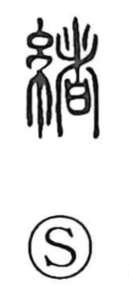

緒

Uncategorized
Kun: o | On: sho, cho
beginning ・ end of a thread ・ cord ・ strap ・ clue ・ remainder ・ feelings
Explanation
緒 is a phono-semantic character combining 糸, the thread radical, with 者 as its phonetic. In early forms, 者 depicts the act of burying an etsu— a covenant vessel containing petitions to the gods—within an earthen village wall as a protective barrier against harm. Joined to 糸, this yields the image of thread ends bound together, the starting point one can grasp. From this concrete sense it came to mean the beginning of things and a clue that lets one take hold of a matter, and also the remainder or what is left over. By extension it refers to the stirrings of the mind and heart, as in compounds like 心緒 and 情緒. In Japanese it is read o in words such as 鼻緒, the thong of a geta sandal.